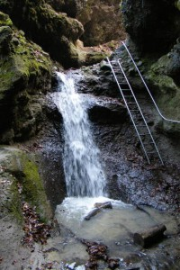
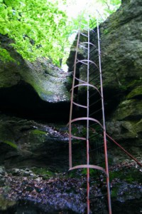
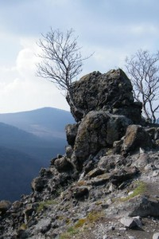
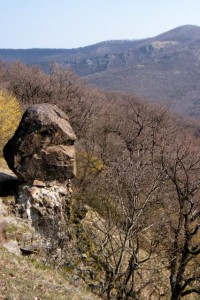

A Pilis-hegység természeti értékei
Pilis-hegység természeti értékei, látványos túraútjai a természetjárók paradicsoma, több jelzett turistaút kezdő és végpontja Dobogókő. Sziklái, barlangjai, változatos növény és állatvilága teszi vonzóvá a karsztos Pilis-hegységet.
- Rám-szakadék
- Holdvilág-árok
- Vadálló-kövek, Prédikálószék
- Ferenczy-szikla
- Pilisszentkereszt, Dera-szurdok
- Pilisszentkereszt, Vaskapu-szikla
- Pilisborosjenő, Teve-szikla
Rám-szakadék
Rám-szakadék lenyűgöző természeti szépsége miatt méltán tartozik a térség legismertebb kirándulóhelyei közé, amit nem csak a környékről, hanem az egész országból sokan felkeresnek. A látogatók éves száma meghaladja a 60.000 főt.
A szakadék maga egy vulkáni eredetű, nagyjából észak-déli irányban futó szurdokvölgy. Összeszűkülő sziklafalai olykor merőlegesek, de vannak befelé dőlő falak is. Mélysége több helyen meghaladja a 35 m-t, míg szélessége helyenként a 3 m-t sem éri el.
A sziklamederben állandóan csörgedezik a víz, amely hóolvadáskor és nagyobb esők idején patakká duzzad. A szurdokban összességében 112 m-es szintkülönbséget kell leküzdeniük a túrázóknak. A völgy alsó és felső bejáratánál erdei pihenőhely fogadja az érkezőket.
A Rám-szakadék természeti adottságai miatt egyike a legnehezebben járható magyarországi jelzett turistautaknak. A kirándulók hosszú ideig a kihelyezett láncokba kapaszkodva tudták végigjárni a völgyet. Az évek során azonban ezek a láncok elhasználódtak, több helyen eltűntek, a szakadékban való túrázás veszélyessé vált.
A Pilisi Parkerdő Zrt. Pilismaróti Erdészete 2005-ben a szakhatóságokkal egyeztetett fejlesztést hajtott végre, amely során a nehezen járható szakaszokon rozsdamentes anyagból készült létrák és kapaszkodó korlátok, a pihenőhelyeken új asztalok és padok, valamint tájékoztató táblák lettek kihelyezve.
Holdvilág-árok
A Holdvilág-árok kedvelt kirándulóhely a Visegrádi-hegységben, Pomáztól északnyugatra, körülbelül hat kilométernyi távolságban. Ezen túlmenően azonban ősi temetkezési, kultikus helynek is tartják, egyes feltevések szerint ezen a területen állt egykor Attila városa (Sicambria, Ecilburg). Egy másik feltételezés szerint Árpád fejedelmet itt temették el. Ezek az elméletek mindmáig nem nyertek tudományos igazolást, de bizonyításukra már több kísérletet tettek, a területen régészeti feltárásokat folytattak.
Kiskovácsi vagy Lajosforrás felől gyalogosan megközelíthető. Látogatása nedves időben a csúszásveszély miatt nem javasolható, mivel nehéz és sokszor nem veszélytelen mászás után közelíthető csak meg. Közvetlenül az úgynevezett Meteor-létrán lehet leereszkedni az árokba, bár némi kerülővel egy meredek lépcsőn is elérhető.
A szurdok végén található az ún. Remete-barlang. A barlang fölött csapadékosabb időjárás esetén csodálatos, mintegy 10 m magasságból alázúduló vízesés látványában gyönyörködhetünk, mellyel csak az a kép vetekedhet, melyet ugyanez a jelenség a legzordabb téli napok idején megfagyott állapotában nyújt.
A vízesés mellett létra található, mely a piros kereszt, majd a piros négyzet jelzésen haladva Lajosforrásra vezet. Fontos tudni, hogy a jelzett turista út a vaslétra elkerülésével, kiépített lépcsősorokon jut fel az árok mindkét oldalán. Lajosforrástól a zöld háromszög vonalán a Kőrösi Csoma Sándor emlékmű érintésével, csodálatos panorámában gyönyörködve juthatunk el Dömörkapuhoz. Innen már autóbusszal folytathatjuk utunkat Szentendrére vagy Pilisszentlászlóra.
Vadálló-kövek, Prédikálószék
A Prédikálószék, amely egy hatalmas andezit szikla, a maga 639 méterével Visegrád környéki hegycsoport legmagasabb tagja.
A csúcson egy kis tisztást, rajta padokat és asztalokat találunk. A tisztás mellett egy fából készült kereszt magasodik.
A Prédikálószékről gyönyörű kilátás tárul elénk. Alattunk kanyarog a Duna. Innenső partján Visegrádot láthatjuk a Salamon-toronnyal és a Fellegvárral. Túlsó oldalán a Börzsöny csúcsai, többek között a Szent Mihály-hegy, a Csóványos és a Nagy-Hideg-hegy magasodnak. Oldalában találhatjuk a Vadálló-kövek különleges alakú szikláit: a Nagytuskót, a Széles-tornyot, a Bunkót, Függőkövet, a Felkiáltó jelet és Árpád trónját.
A Vadálló-kövek, amely vulkáni törmelékes kőzetből, azaz agglomerátumból áll, jól példázza a Visegrádi-hegység földtani felépítésének sajátosságait.
A Prédikálószék és a Vadálló-kövek a Duna-Ipoly Nemzeti Park fokozottan védett része, a Bioszféra Rezervátum magterülete. A sziklagyepeken számos ritka növényfaj él, ezért virágokat ne szedjünk és a kijelölt turistaútról ne térjünk le.
Ferenczy-szikla
Egy ezoterikus nézet szerint Dobogókőn és környékén, a Pilisben található „a Föld szívcsakrája”, azaz „bolygónk dobogó szíve”, ami az ott tartózkodók szervezetét feltölti energiával. Az Ősmagyar Táltos Egyház szerint a szívcsakra a Rám-hegyen, a Ferenczy-sziklánál található; vezetőjük laoszi és kambodzsai lámákat és buddhista szerzeteseket is elvitt oda.
Az elmélet szerint Dobogókő nevében archaikus tudást őriz, melynek mondásban rögzült, elhomályosult változata máig él a Kárpát-medence népeinél: Közép-Európát az itt élő népek kontinensünk szíveként emlegetik. Már elődeink is tisztában voltak a hely jelentőségével.
Attila hun vezér legféltettebb területe ez volt a Kárpát-medencében. Egy legenda szerint a halála után a mennyei képe is megjelent itt.
Egyéb természeti értékek
Pilisszentkereszt, Dera-szurdok
Van itt egy folyó, amelyet legalább négy különböző néven emlegetnek errefelé. Itt, a Kakas-hegy lábánál tör utat magának a Dera-patak - más néven Kovács-patak, Pilisszentkereszti patak vagy Pomázi patak. De Balla Antal 1771-ben készült térképén például Mélly-patak néven szerepel.
Pilisborosjenő, Teve-szikla
A földtörténet triász korszakában, kb. 220 millió évvel ezelőtt keletkezett a Teve-sziklát alkotó fődolomit.
Ennek a karbonátos kőzegnek az anyaga az árapály övben ülepedett le, sekély tengerrel borított, tenger alatti hátságokon.